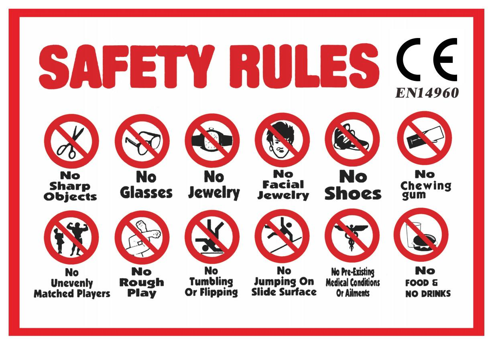

RESERVATIES:
Reserveren kan telefonisch of via e-mail. Een reservatie is pas definitief wanneer ze door ons werd
bevestigd.
Deze bevestiging gebeurt via een e-mail of WhatsApp waarin er tevens ook praktische informatie zal staan.
ANNULATIES:
Bij slecht weer kan een reservatie kosteloos worden geannuleerd tot 8u 's ochtends van de dag waarop de levering
was voorzien.
Voor alle andere gevallen van annulatie zal een kost van 70% van de totale huursom worden aangerekend aan de
huurder (dit kan ook tijdens de verhuring als wij zien dat onze Alg. voorwaarden niet gerespecteerd worden).
PIETIE-FUN behoudt zich het recht voor om ten aller tijde de reservering te annuleren. Dit kan bijvoorbeeld bij
slecht weer of een voorspelling van onweer.
Annulaties door PIETIE-FUN kunnen in geen geval aanleiding geven tot een schadeloosstelling van de huurder.
PRIJZEN EN BETALINGEN:
Afgesproken prijzen zijn Excl. BTW en inclusief levering (binnen de vooropgestelde zone).
De betaling dient cash te gebeuren bij de levering. (wij accepteren Cash, instant overschrijving, PayPal,
Payconiq)
Bij plaatsing van de bestelling verklaart de huurder zich akkoord met alle bepalingen van deze voorwaarden.
GEBRUIK VAN DE SPRINGKASTELEN:
De huurder dient het springkasteel te gebruiken "als een goede huisvader."
Een springkasteel is ontworpen voor kinderen. De kinderen dienen ten aller tijde onder het toezicht van een
volwassene te staan. Het gebruik van een fluitje wordt aangeraden. PIETIE-FUN kan in geen geval aansprakelijk
worden gesteld voor gebeurlijke ongevallen tijdens het gebruik van
het springkasteel.Tijdens het gebruik dient er rondom het springkasteel een vrije ruimte van minstens 1,8m te
zijn.
Het is verboden om:
- Het springkasteel te betreden met schoenen, juwelen of andere puntige voorwerpen;
- Voedsel, drank of kauwgom te nuttigen in het kasteel;
- Confetti, papierslingers of dergelijke in het springkasteel te gebruiken (kleuren geven af en gaan er niet
meer uit)
- Huisdieren op het springkasteel te laten;
- De buitenwanden te beklimmen en op de muren te kruipen;
- Te kleuren in het springkasteel (zowel met stiften, verf als potlood);
- De maximumcapaciteit van onze toestellen te overscheiden;
- Het springkasteel op te blazen of af te laten wanneer er personen in aanwezig zijn;
- Te springen op het voorste gedeelte. Dit dient enkel als opstap;
- Met zand, kiezel of modder in het kasteel te spelen;
- De blower(s) af te dekken;
- Het springkasteel na opbouw nog te verplaatsen en dit tijdens de gehele duur van de huurperiode.
Bij stroomuitval of drukverlies dient het kasteel eerst te worden ontruimd. Men dient te wachten tot de motor
van de blazer(s) volledig tot stilstand is gekomen, alvorens deze opnieuw op te starten.
Bij een huurperiode van één dag:
- Dient het kasteel permanent opgeblazen te blijven tot PIETIE-FUN het weer komt ophalen.
Bij een huurperiode van meer dan één dag:
- het eventuele regenwater laten aflopen alvorens het kasteel af te laten, torens en muren naar binnen plooien,
het springkasteel in twee plooien en er het bijgeleverde zeil overgooien.
De blowers en verlengsnoeren dienen binnengezet te worden, buiten het bereik van kinderen.
ATTRACTIES:
Attracties worden door ons geleverd en opgebouwd.
De bediening van de attractie gebeurt ENKEL DOOR ONS .
In uitzonderlijke gevallen kan de bediening door onze klant gebeuren, in dat laatste geval valt de
verantwoordelijkheid VOLLEDIG in handen van de huurder en is dit niet langer meer voor PIETIE-FUN. Wij zorgen in
dit geval voor de correcte opstelling en plaatsing, de huurder zorgt voor een volwassene die de bediening doet.
De bediener van het toestel dient ten alle tijden rekening te houden met de veiligheidsvoorschriften en
stabiliteit van het toestel (indien nodig zal deze ook moeten instaan voor de bij regeling van de attractie).
Bij het laten instappen van de kinderen zal de bediener er altijd over waken dat het gewicht verdeeld is over de
attractie, zodat deze niet in onbalans draait. (2 personen tegenover elkaar, 3 personen in driehoek, 4 personen
in kruis, enz…)
De huurder is in dit geval ook verplicht een verzekering af te sluiten voor eventuele ongevallen en schades. Bij
een ongeval, schade of diefstal zullen ALLE kosten in nieuwwaarde aangerekend worden aan de huurder.
Bij een totaal verlies als gevolge van schade of diefstal is ook hier een volledige vervanging in nieuwwaarde
van toepassing het defecte toestel blijft eigendom van PIETIE-FUN, ook na eventuele vervanging. Hier zullen ook
de kosten aan gerekend worden van verhuringen die wij mislopen tot op het moment de herstelling of vervanging
gebeurd is.
Bij wijzigingen in een overeenkomst vervallen altijd de afgesproken prijzen en vallen deze altijd terug naar
onze basis prijsvoorwaarden.
Bij B2B overeenkomsten word er vanuit gegaan van 8 uur per dag, er word geen onderscheid gemaakt tussen
rustperiodes (stilstaan) en in bedrijf (werkende toestand) zijn van een attractie. Bij wijziging van contracten,
door eender welke reden hebben wij het recht de totaal aantal uren aan te rekenen wat onze attracties ter
plaatse hebben gestaan aan
€ 20/uur (dit geld enkel bij bediening uitgevoerd door derde omdat wij het effectieve gebruik dan niet kunnen
opvolgen)
Bij meerdere dagen opeenvolgend moet de hurende partij erop toezien dat alles veilig is opgeborgen en onze
toestellen achter slot en grendel staan.
Er dient altijd een vrije toegang voorzien te worden dat wij met ons vervoer tot op de plaats kunnen rijden.
De stroomvoorziening word op voorhand doorgegeven (minimaal een buitenlijn van 16A voor ons alleen, tenzij
anders gevraagd) en dient aanwezig te zijn.
Wij kunnen niet aansprakelijk gesteld worden als er niet voldoende capaciteit aanwezig is nog kunnen wij
hiervoor enige vergoeding geven.
Onze attracties hebben hun wettelijke keuringen, indien dit niet voldoende is, is het aan de persoon of
organisatie die ons inhuurt om een bijkomende keuring uit te laten voeren, dit geheel op eigen kosten en niet
terug vorderbaar op ons (dit is op alle verhuurde goed van toepassing).
FUN - FOOD:
Popcornmachine:
Het gebruik van niet geschikte grondstoffen is niet toegestaan.
De gebruiksaanwijzing krijgt u altijd bij het toestel er word aangeraden zich eraan te houden.
Eventuele gebruiksproducten kunnen bij ons mee besteld worden bij twijfel.
Bij gebruik van onze toestellen wordt er verwacht dat er met enige voorzichtigheid omgegaan wordt, dit wil
zeggen er zijn onderdelen die heel warm worden en kinderen kunnen hier zeer zware brandwonden aan oplopen.
Daarbuiten zitten er glas platen in dus opgelet bij stoten en schokken. Het toestel moet ALTIJD op een vlakke
stabiele ondergrond geplaatst worden (bij voorkeur een keukenkast of stevige tafel), de bediening gebeurt altijd
door een volwassene. Het niet werken van onze toestellen door gebrek aan gebruiksproducten of elektriciteit kan
in geen enkel geval bij PIETIE-FUN verhaald worden.
De machine wordt proper geleverd en wij verwachten deze ook proper terug.
Bij reiniging worden er zachte materialen gebruikt en een gewoon sopje (water met dreft)
GEEN schuurproducten zoals cif en schuursponsen om de antiaanbaklaag niet te beschadigen. Opgelet het toestel
dient uit het stopcontact getrokken te worden en afgekoeld te zijn alvorens te reinigen. (dit zijn toestellen
die op elektriciteit werken dus houd hier rekening mee als u gaat reinigen met water en zeep)
PIETIE-FUN is niet verantwoordelijk voor eventuele schade of ongevallen door verkeerd gebruik zie rubriek schade
en reiniging voor meer info.
NON - FOOD:
Bij gebruik van onze non- food materialen dienen onze richtlijnen altijd gevolgd te worden.
De gebruiksaanwijzing krijgt u altijd bij het toestel (indien van toepassing) er word aangeraden zich eraan te
houden. Gebruiksproducten kunnen te allen tijde bij ons verkregen worden.
Al onze materialen dienen sowieso altijd op een vlakke stabiele ondergrond geplaatst te worden. Het niet werken
van onze toestellen door gebrek aan gebruiksproducten of elektriciteit kan in geen enkel geval bij PIETIE-FUN
verhaald worden.
PIETIE-FUN is niet verantwoordelijk voor eventuele schade of ongevallen door verkeerd gebruik zie rubriek schade
en reiniging voor meer info.
VOORZIENINGEN:
Er dient een minimale doorgang te zijn van 1,5 meter (de breedte van een gewone voordeur volstaat niet altijd).
PIETIE-FUN is niet verantwoordelijk voor eventuele schade (trappen, muren, deur, inboedel…) indien er geen of
onvoldoende vrije doorgang is bij de plaatsing.
Een springkasteel weegt 100 tot 200kg of meer, wij vragen dan ook dat er altijd minstens één volwassene aanwezig
is tijdens het laden en plaatsen van het springkasteel.
Er dient een stopcontact van 220V (minimaal 16A) aanwezig te zijn buurt van de plaats waar het springkasteel
opgesteld dient te worden.
De ondergrond moet vlak zijn en vrij van scherpe of puntige voorwerpen.
Bij zand of braakliggende grond dient de blower op een karton te staan om geen zand aan te zuigen.
WAT BIJ REGEN EN WIND:
- Indien het begint te regenen, het springkasteel opgeblazen laten.
- Bij hevige wind of onweer: het eventuele regenwater laten aflopen, het kasteel aflaten, torens en muren naar
binnen plooien, springkasteel in twee plooien en het bijgeleverde zeil/ zeil onder het kussen er over
gooien.
- Blowers en verlengsnoeren uit de regen zetten.
- Blowers mogen NOOIT afgedekt worden.
SCHADE, VERLIES EN VERANTWOORDELIJKHEID:
Het springkasteel wordt altijd in overleg met de huurder geplaatst en verankerd, daarom zal de montage en
verankering ook ten alle tijden ter verantwoordelijkheid van de huurder blijven en kan hier in geen enkel geval
ons iets ten laste gelegd worden.
Op het moment van de plaatsing/levering, ondertekent de huurder de werk/lever -bon. Hiermee verklaart de huurder
zich automatisch akkoord met alle huur- en gebruiksvoorwaarden.
Bij de levering wordt al het materiaal (springkastelen, toestellen, …) samen met de huurder op schade
gecontroleerd.
Schade dat nadien ontstaat, tijdens de hele verhuurperiode, dient zo snel mogelijk gemeld te worden en valt
onder de verantwoordelijkheid van de huurder.
Bij schade worden al de door PIETIE-FUN gemaakte kosten voor herstelling doorgerekend aan de huurder.
Herstellingen gebeuren steeds door een door PIETIE-FUN gekozen bedrijf, de huurder heeft hierin GEEN inspraak.
In geval van onherstelbare schade, diefstal en/of verlies, dient de huurder zowel de overeengekomen huurprijs
als de nieuwwaarde van het gehuurde goed te vergoeden.
Reiniging:
Wij proberen onze springkastelen altijd zo proper mogelijk te houden.
Daarom controleren wij ook altijd bij afbraak op vervuiling en eventuele schade.
Bij kleine vervuiling (normaal gebruik), volstaat meestal een borstel of een snel vodje.
Echter bij grote vervuiling door misbruik zal er een reinigingskost aangerekend worden van 200 euro.
Blijkt dat wij het zelfs niet zuiver krijgen door goed kuisen en we het springkasteel moeten binnenbrengen voor
industriële reiniging zullen kosten deze boven op de 200 euro aangerekend worden, krijgen zei het niet opgelost
word dit gezien als onherstelbare schade.
In dit geval dient de huurder zowel de overeengekomen huurprijs als de nieuwwaarde van het gehuurde goed te
vergoeden.
Diefstal:
Indien het springkasteel of één van zijn componenten gestolen wordt dient er altijd aangifte gedaan te worden
bij de politie en word PIETIE-FUN hiervan op de hoogte gebracht en een dubbel van de aangifte
bezorgd.
Bij diefstal onder verantwoordelijkheid van de
huurder dient de volledige aankoopsom + BTW betaald te worden
binnen de 10 werkdagen.
De eventueel misgelopen huur over de periode in afwachting op het nieuwe component,
springkasteel, attractie of ander goed zal hier ook in rekening gebracht worden.